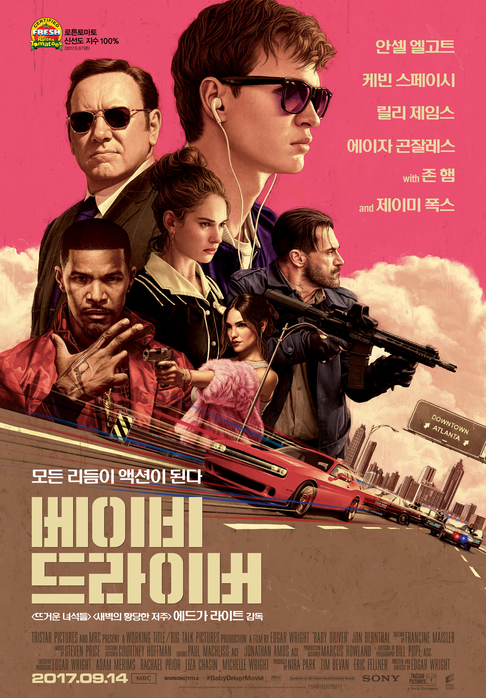

장르별 추천 영화
SF 영화
 |
인터스텔라 (2014년) | 평점 |
| 세계 각국의 정부와 경제가 완전히 붕괴된 미래가 다가온다. 지난 20세기에 범한 잘못이 전 세계적인 식량 부족을 불러왔고, NASA도 해체되었다. 이때 시공간에 불가사의한 틈이 열리고, 남은 자들에게는 이 곳을 탐험해 인류를 구해야 하는 임무가 지워진다. 사랑하는 가족들을 뒤로 한 채 인류라는 더 큰 가족을 위해, 그들은 이제 희망을 찾아 우주로 간다. 그리고 우린 답을 찾을 것이다. 늘 그랬듯이… | 9.11 |
| A.I. (2001년) | 평점 | |
| 과학문명은 천문학적 속도로 발전하고 있지만 극지방의 해빙으로 도시들은 물에 잠기고 천연자원은 고갈되어 가던 미래의 지구. 모든 생활을 감시받고, 먹는 음식조차 통제되는 그 세계에서 인간들은 인공지능 (Artificial Intelligence)을 가진 인조인간들의 봉사를 받으며 살아간다. 정원가꾸기, 집안 일, 말 동무등 로봇이 인간을 위해 해줄수 있는 일은 무한하다. 단 한가지 '사랑'만 빼고... | 9,27 |
 |
컨택트 (2016년) | 평점 |
| 12개의 외계 비행 물체(쉘)가 미국, 중국, 러시아를 비롯한 세계 각지 상공에 등장했다. 웨버 대령(포레스트 휘태커)은 언어학 전문가 루이스 뱅크스 박사(에이미 아담스)와 과학자 이안 도넬리(제레미 레너)를 통해 외계 비행 물체(쉘) 접촉하기 시작한다. 두 사람은 18시간마다 아래쪽에서 문이 열리는 외계 비행 물체(쉘) 내부로 진입해 정체 모를 생명체와 마주하게 되고, 이들은 15시간 내 그들이 지구에 온 이유를 밝혀내야 하는데... | 8.45 |
| 가타카 (1997년) | 평점 | |
| 인간을 지배하는 블루빛 테크놀로지의 세계- 가타카에 오신걸 환영합니다. | SF와 스릴러의 완벽한 유전자 조합이 시작된다. | 그는 정열적이고, 풍부한 감성의 소유자이며, 자신의 꿈에 대한 확실한 믿음도 있다. 그러나 21세기에 그는 단지 쓰레기일 뿐이다! | 9.21 |
로맨스 영화
 |
어바웃타임 (2013년) | 평점 |
| 모태솔로 팀(돔놀 글리슨)은 성인이 된 날, 아버지(빌 나이)로부터 놀랄만한 가문의 비밀을 듣게 된다.바로 시간을 되돌릴 수 있는 능력이 있다는 것!그것이 비록 히틀러를 죽이거나 여신과 뜨거운 사랑을 할 수 는 없지만, 여자친구는 만들어 줄 순 있으리.. 꿈을 위해 런던으로 간 팀은 우연히 만난 사랑스러운 여인 메리에게 첫눈에 반하게 된다. | 9.25 |
 |
이터널 선샤인 (2004년) | 평점 |
| 사랑은 그렇게 다시 기억된다..조엘은 아픈 기억만을 지워준다는 라쿠나사를 찾아가 헤어진 연인 클레멘타인의 기억을 지우기로 결심한다. 기억이 사라져 갈수록 조엘은 사랑이 시작되던 순간, 행복한 기억들, 가슴 속에 각인된 추억들을 지우기 싫어지기만 하는데... 당신을 지우면 이 아픔도 사라질까요? 사랑은 그렇게 다시 기억된다. | 9.22 |
| 이프온리 (2004년) | 평점 | |
| 사랑을 꿈꾸는 로맨티스트 '그녀'와 성공을 꿈꾸는 워커홀릭 '그'. 바이올린을 전공하는 사랑스런 로맨티스트 사만다(제니퍼 러브 휴잇)와 자신의 일에만 몰두하는 성공한 젊은 비즈니스 맨 이안(폴 니콜스). 둘은 서로를 사랑하지만 사만다는 일만 생각하고 자신은 자신은 뒷전인 이안의 모습에 마음이 아프고, 이안은 자신을 이해해주지 못하는 사만다가 답답하다. | 9.09 |
| 내 머리속의 지우개 (2004년) | 평점 | |
| 사랑했던 기억만은 지워지지 않기를... | 그녀가 모든 기억을 잃어가고 있습니다. 이름도, 나이도, 사랑했던 나 조차도... | 8.94 |
액션 영화
| 범죄도시 (2017년) | 평점 | |
| 대한민국을 뒤흔든 ‘장첸(윤계상 분)’ 일당을 잡기 위해 오직 주먹 한방으로 도시의 평화를 유지해 온 괴물형사 ‘마석도(마동석 분)’와 인간미 넘치는 든든한 리더 ‘전일만(최귀화 분)’ 반장이 이끄는 강력반은 나쁜 놈들을 한방에 쓸어버릴 끝.짱.나.는. 작전을 세우는데… | 9.34 |
|  | 베이비 드라이버 (2017년) | 평점 |
| 귀신 같은 운전 실력, 완벽한 플레이리스트를 갖춘 탈출 전문 드라이버 베이비. 어린 시절 사고로 청력에 이상이 생긴 그에게 음악은 필수다. 그러던 어느 날, 운명 같은 그녀 데보라를 만나게 되면서 베이비는 새로운 인생으로의 탈출을 꿈꾸게 된다. 하지만 같은 팀인 박사, 달링, 버디, 배츠는 그를 절대 놓아주려 하지 않는데... | 8.44 |
| 스파이 게임 (2002년) | 평점 | |
| 때는 1991년, 은퇴를 준비하고 있는 CIA의 베테랑 요원 나단 뮈어(Nathan Muir: 로버트 레드포드 분)는 자신의 부하였던 젊은 요원 톰 비숍(Tom Bishop: 브래드 피트 분)이 중국에서 스파이 혐의로 체포되었다는 소식을 듣는다. 비숍은 24시간 후 사형에 처해질 예정이지만 CIA 수뇌부는 국제관계 악화를 우려해 쉽게 결단을 내리지 못한다. 뮈어는 자신이 알고 있는 모든 지혜와 실력을 동원하여 비숍을 구출하기로 결심한다. | 8.75 |
| A-특공대 (2010년) | 평점 | |
| 최고의 실력을 자랑하던 특공대가 돌연 자취를 감춘 지 1년. 누구도 해결할 수 없고, 아무도 도울 수 없는 문제들을 해결하기 위해 최고의 해결사 A-특공대가 되어 다시 돌아왔다! 비상한 두뇌 회전의 소유자 한니발의 기상천외한 작전 지휘 아래, 작업의 달인 멋쟁이의 수려한 외모와 화려한 언변으로 실마리를 풀면 두려움을 모르는 짐승 파이터 B.A가 선방을 날리고 똘끼 충만한 천재 돌+I 파일럿, 머독의 화려한 공중전이 펼쳐진다! | 8.94 |
코미디 영화
| 겟 스마트 (2008년) | 평점 | |
| 세상의 평화를 위해 존재하는 비밀정보기관 컨트롤은 악의 집단 카오스의 음모로 모든 요원들의 정체가 발각되자, 사무요원 '맥스웰 스마트(스티브 카렐)'를 작전에 투입한다. 성형수술을 받아 미녀요원으로 거듭난 '에이전트99(앤 해서웨이)'와 한 팀이 된 스마트 요원. 현장경험은 전무, 하지만 언제든 현장에 나갈 준비된 요원인 그는 '똑똑함'을 무기로 작전에 나서는데.. 세상을 구하기 위해 나선 2인자의 거침없는 무한도전은 지금부터 시작이다! | 8.21 |
 |
내 아내의 모든 것 (2012년) | 평점 |
| 예쁘고 사랑스러운 외모, 완벽한 요리 실력, 때론 섹시하기까지. 남들이 보기엔 모든 것을 갖춘 최고의 여자 ‘정인’(임수정). 하지만 입만 열면 쏟아내는 불평과 독설로 인해 남편 ‘두현’(이선균)에겐 결혼생활 하루하루가 죽을 맛이다. 매일 수백 번씩 이혼을 결심하지만 아내가 무서워 이혼의 ‘이’자도 꺼내지 못하는 소심한 남편 두현. 그런 아내와 헤어질 방법은 단 하나뿐. 그녀가 먼저 두현을 떠나게 하는 것! | 8.55 |
 |
내가 죽기 전에 가장 듣고 싶은 말 (2017년) | 평점 |
| 완벽한 엔딩을 위한 인생개조프로젝트! 은퇴한 광고 에이전시 보스 ‘해리엇’(셜리 맥클레인)은 자신의 사망기사를 미리 컨펌하기 위해 사망기사 전문기자인 ‘앤’(아만다 사이프리드)을 고용한다. 하지만 해리엇의 까칠한 성격 탓에 주변 사람들은 모두 저주의 말만 퍼붓고, 좌절한 앤에게 해리엇은 뜻밖의 제안을 한다. | 8.47 |
| 지랄발광 17세 (2017년) | 평점 | |
| 자식보다 본인 인생이 더 중요한 엄마, 공부 잘하고 잘 생기고 인기 많은 엄마아들, 이런 엄마아들과 눈 맞은 10년 넘은 베프, 내 존재조차 모르는 짝사랑남, 고민을 상담해도 전혀 도움도, 위로도 안되는 돌직구 선생님까지, 내 주변은 무식하고 이기적인 인간들 투성이다. 그보다 더 끔찍한 사실은 지금 이 얼굴로 평생을 살아야 한다는 것… 망했다… 이번 생은 완전히 망했다! | 8.63 |